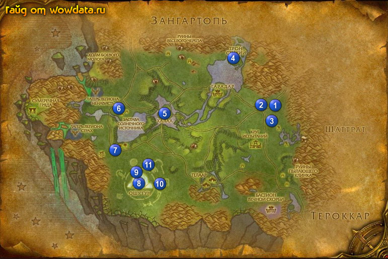

1) Когда вы войдете в Награнд идите к ближайшему лагерю 1 (71, 41) и ищите кто там Хеминг Эрнестуэй .
2) Сохраните [Образец порошка кристалла Ошу'гуна], который вы нейдете в этой зоне для получения медалек когда Халаа под контролем альянса.
3) Начните квесты <Охота на ветрухов>, <Охота на шерсторогов> и <Охота на талбуков>.
4) Ищите вокруг элеков (тупо слоны) бейте их пока не соберете 3 [Пара бивней] для дальнейшего получения экспы и репутации. В дальнейшем чем больше соберете [Пара бивней] тем больше экспы и репутации вы получите.
5) Теперь бейте ветрухов шерсторогов и талбуков на севере и северо-западет от лагеря. Поселение талбуков находится на севере, место обитания ветрухов на юго-западе 2 (67, 40) а лагерь шерсторогов южнее 3 (70, 46). Пока будете бить зверюшек бегая по кругу от лагеря к лагерю, так же бейте Пыльный ревун элементарей, пока не выпадет [Вой-Ветер] который начнитет <Вой-Ветер>.
6) Когда закончите вернитесь в лагерь 1 (71, 41) закончите <Охота на ветрухов> <Охота на шерсторогов> и <Охота на талбуков>. Начните <Охота на ветрухов> <Охота на шерсторогов> <Охота на талбуков>.
7) Сейчас у вас должно быть 80 – 85% на 65 лвл.
8) Идите на северо запад к Трон Стихий 4 (60, 22), закончите <Вой-Ветер> у Morgh, начните <Разлагатели Темной Крови>, затем начните <Из глубин> у Повелитель стихий Унтраг, у Повелитель cтихий Ло'ап начните <Редкий деликатес> и <Грязные делишки>.
9) Затем неподалеку найдите Гордауг – большого каменного элементаря, закончите у него <Из глубин> и начните <Страдающие духи земли>.
10) Идите на запад и бейте Талбук-шипоед для <Охота на талбуков>, вы легко убьете 30 штук на этой «полянке». Пока вы выполняете этот квест, так же ищите Навоз для квеста <Редкий деликатес>, они валяются везде.
11) Есди вы пройдете еще немного на запад вы наткнетесь на Руины Веселого Черепа, к югу от них много c Копытень-бык для <Охота на шерсторогов>.
12) Теперь идите на юго-запад к Халаа 5 (42, 43), не не входите в нее, спуститесь вниз к воде. Бейте Порождение грязи тут для <Грязные делишки>.
13) Если Халаа под контолем альянса, войдите в нее к Кертош в западной части и начните <Порошок кристалла Ошу'гуна>, и тут же закончите его так как у вас должно уже быть 20 кристаллов. теперь это бесконечный квест.
14) Идите на запад к Застава Солнечного Источника 6 (31, 43) и бейте Разлагатель Темной Крови для <Разлагатели Темной Крови>, не бойтесь убить больше чем нужно или не тех, за них дают репутацию с Куренай.
15) Идите дальше на юг к 7 (31, 57), начните <Вопросы безопасности> у Зерид, у Гезхе начните <Украсть у вора> и у Шадрек начните <Кость на вес золота> и тут же закончите этот квест.
16) теперь идите на юг к Ошу'гун 8 (36, 70), тут много Отрок Бездны для <Вопросы безопасности>, так же бейте там Налетчик из клана Вир'аани и соберайте с земли [Осколок кристалла Ошу'гуна] для <Украсть у вора>. Будте уверены если вы пройдете вниз 9 (35, 67) и откроете карту то вы получите 1100 опыта.
17) Идите обратно на север в Небесный лагерь и закончите <Украсть у вора> у Гезхе, теперь это бесконечный квест.
18) У Зерид закончите <Вопросы безопасности> и начните <Гавакси>.
19) Вы должны стать 65 лвл сейчась, или вы вам должно недостовать совсем чуть чуть экспы, если вы не стали 65 лвл.
20) Идите назад на юг к Ошу'гун и ищите Гава'кси для квеста <Гавакси>. Иногда он бывает в точке
10 (41, 71) иногда 11 (38, 64) или 10 (42, 73). Идите закончите квест.
21) Теперь вы точно должны стать 65 лвл.